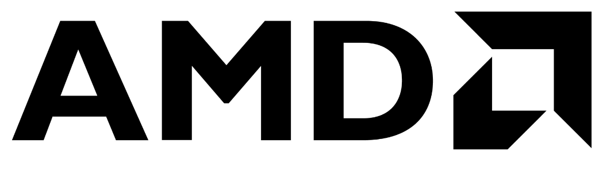
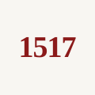

Pingash Vohra
CEO & Co-Founder
Forbes Zero-Experience Fellow. Building products since 14. CS @ University of Waterloo.
A mirror-mounted respiratory monitor that catches the silent decline before pneumonia kills 1 in 3 Parkinson's patients. No wearables.
Parkinson's Foundation Statistics 2023 · Akbar et al., Movement Disorders 2015 · Pennington et al., Parkinsonism & Related Disorders 2010
In Parkinson's Disease, the throat muscles weaken quietly. Swallowing fails. Food enters the lungs. Pneumonia follows. It takes 10–14 weeks to develop. No alarm. No device. No one watching.
30,000+ senior living and memory-care facilities across North America have zero passive respiratory monitoring. The decline is visible weeks in advance. Nobody is looking.
| Criteria | AEYRON Respira | Wearables | Manual Nursing Checks |
|---|---|---|---|
| 24/7 Passive Monitoring | Limited | ✗ | |
| Privacy (No Cameras) | |||
| 10-Week Early Warning | ✗ | ✗ | |
| Zero-Chore (No Charging) | ✗ | ||
| Works in Dementia / Memory Care | ✗ | Limited | |
| Total ✓ | 0/5 | 0/5 | 0/5 |
No interaction from the resident. No wearable. No training required. Just a mirror that works every single day.
Presence is detected automatically. Nothing to press, nothing to wear. From the resident's perspective, it is still just a bathroom mirror.
A radar measures chest movements. A microphone listens for voice softening — an early sign of throat muscle weakening in Parkinson's. Both are processed inside the device. Nothing is sent to the cloud. Nothing is recorded.
Over the first 7 days, AEYRON builds a unique respiratory and voice profile for each resident. From day 8 onward, every reading is compared against that personal baseline.
When AI detects a consistent downward trend in respiratory or vocal strength — the 10–14 week warning window — an encrypted push alert reaches the facility dashboard and care team app.
Catching the 10–14 week decline lets staff intervene early — fewer transfers, preserved bed occupancy.
Passive monitoring replaces routine respiratory checks. Nurses are alerted only when action is needed.
Pilot families rate the proactive monitoring 92/100. Facilities use it as a sales advantage at intake.
Estimates assume 4 transfers/yr without monitoring → 1 with, $15k saved per avoided transfer, 22 nurse-hrs/wk reclaimed scaled to facility size, and Respira at $160/unit/mo.
No camera. No cloud. The only thing that ever leaves the device is an encrypted "trend declining" alert — a single bit of intent, never raw biometrics.
A live dashboard for care teams. Real-time vitals, 14-week trend history, and silent decline alerts — built for the way memory-care staff actually work.


Engineered by teams at GWU and University of Waterloo. Radar, ML, clinical research, product design.
Forbes Zero-Experience Fellow. Building products since 14. CS @ University of Waterloo.
Ex-AMD · Ex-E3 (YC S21). Firmware, sensor fusion, and the ML pipeline behind Respira. CS @ University of Waterloo.
Federal Reserve Research Analyst. President, Washington Forum on India. Finance & International Affairs @ GWU.
A glimpse of what runs behind your mirror — every night, silently. This is your browser webcam. Respira hardware sees 10× more.
Everything is processed on your device. Nothing is transmitted.
Cancel
Canada + EU. Wellness-first positioning sidesteps medical-device classification delays while we collect real-world respiratory data.
Scale pilots. Validate respiratory + voice trend models against clinical outcomes. Build the evidence base for FDA Class II pathway.
Extend the platform to COPD and congestive heart failure. License the AI engine to medical-device OEMs and healthcare systems.
We're onboarding 10 pilot memory-care and assisted-living facilities across Waterloo Region and Toronto. Mirror-mounted. No wearables. Just early-warning data that prevents the death nobody saw coming.
Partnerships & investors → aeyron7hq@gmail.com